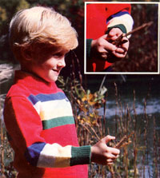

Provide your young 'uns with hours of enjoyment by creating this simple, old-fashioned toy.
One sultry summer's evening about 20 years ago, my grandfather-who was quite an ingenious old gentleman-sat whittling away on the back porch while Grandma cooked supper for the family. When Grandpa turned his finished handiwork over to me, I found it was a new plaything . . . and one that kept me fascinated for days afterward.
Granddaddy's clothespin popper is an easy-to-put-together homespun toy that you can make for your youngsters (or your grandchildren) in just a few minutes . . . using only a handful of common household items. All you'll need to fashion one of the child-pleasers are two spring-type clothespins, a pocketknife, and a strong rubber band.
First, remove the spring from one of the clothespins, pick up your whittling knife, and square off the rounded inner notch on one of the halves (see the accompanying diagram) . . . and on the same wooden piece use the point of the knife to deepen the outside notch just a bit. Then put the two sections back together . . . wrap a rubber band several times around their tapered ends . . . and mount the spring, as in the drawing, so that its round coil is on top of the toy.
The other clothespin, when it's taken apart, will provide two rounds of "ammunition" for your popper. Simply whittle away about 1/8" from- and square off-the tapered end of each piece, and you (or an eager youngster) will be able to wedge the stick into the popper. Cock the "trigger"-or spring coil-by sliding one of the tapered pieces, as in the illustration, into the popper until it pushes the inside lever of the spring into the square notch you whittled out. (If the spring won't stay in place, you'll have to take the device apart and carve the "catch" a little deeper . . . so that it's closer to a right angle.) Then position the popper's "ammunition" Justin front of that ledge. (Wrap the rubber band tightly enough to lodge the "shell" snugly between the jaws of the popper.)
At this point, the down-home toy is ready for action. Hold it (with its open end pointing away from you) by grasping the bottom section between your thumb and index finger. Then aim the device at the ceiling-or at a soft, unbreakable object-and pull the trigger toward you with your other forefinger. (You'll probably find that you need to balance the rubber band end of the popper with the thumb of your "trigger" hand.) The spring lever will push forward and send the pin flying 10 or 20 feet.
Once you've tested the popper, remind the young'uns to point their new toy at things instead of people . . . and then let them try out Grandpa's invention. They're sure to have as much fun with the old-fangled plaything as I did!
EDITOR'S NOTE: You can find a few more ambitious projects in "Old-Timey Toys", the centerfold feature in MOTHER NO. 66 . . . a copy can be ordered, for $3.00 plus $1.00 shipping and handling, from THE Mother Earth News(restricted), P.O. Box 70, Hendersonville, North Carolina ,28791.
|
 |
|
|